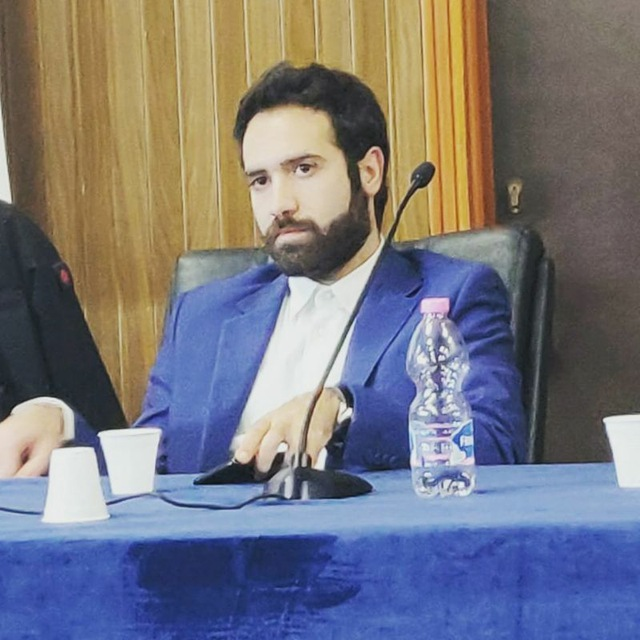

GIUSEPPE CIFARELLI
Epicode Student
Photo during a University Conference
Personal Info
Date Of Birth: 05/07/1995
Phone Number: 329/1639490
E-mail: cifarelli1995@gmail.com
Photo during a University Conference
Date Of Birth: 05/07/1995
Phone Number: 329/1639490
E-mail: cifarelli1995@gmail.com
| Date | School |
|---|---|
| 2007-2013 | High School of technological science |
| 2013-2016 | Astronomy University in Bologne: Retired |
| 2018-- | Economy University in Bari |
| Date | Work |
| 06/2012-08/2012 | Bartender |
| 07/2013-08/2013 | Bartender |
| 10/2021-- | Job Consultant |
| 08/2022-08/2022 | Hotel Handyman |

My birth place